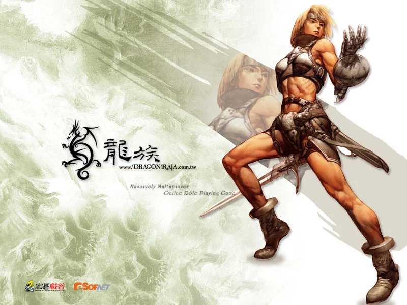

啟動本機服務
由「開始遊戲.cmd」打開啟動器，選擇地圖後按「啟動遊戲」。其他地圖會在背景依序啟動。
龍族 OL · WINDOWS 本機單人版
沿用你手上的原始遊戲素材，升級成免 VM 本機版。
保留原版與舊存檔，以全新角色重新出發。
適用完全原始 Win2003.vmdk 版 · Windows 10 / 11 64 位元

01 / DOWNLOAD
已經持有原始 VM 版的玩家，只需下載升級包。大型遊戲素材會從原始檔案取用，不必重新下載整套遊戲。
版本資料載入中 · 約 68 MB · ZIP 壓縮檔
完成安裝驗證後，這裡會開放正式下載。
下載後可比對 SHA-256，確認檔案傳輸完整。校驗值不等同防毒廠商認證。
正式版本確認後提供02 / BEFORE YOU START
保留完整的原始 VM 版資料夾，裡面需有 Win2003.vmdk。不是只把升級包放到空資料夾。
Windows 10 / 11 64 位元。首次安裝約需 15 GB 可用空間做素材展開；完成後本機版約 2.6 GB。
原版 VM 與舊角色資料會保留。本機版使用獨立資料庫，這份安裝包不會匯入原 VM 的舊角色。
03 / INSTALLATION
先離開遊戲、關閉舊啟動器與 VM。安裝過程請保留防毒開啟。
先解壓縮，四個檔案放在一起。安裝程式會向下尋找原始磁碟映像。
├─ 安裝龍族更新.cmd ← 執行這個檔案 ├─ DragonRaja.msi ├─ SqlLocalDB.msi ├─ 安裝說明.txt └─ 原版目錄 / … / Win2003.vmdk
不要直接在 ZIP 內執行，也不用自行開啟 MSI。若缺少 SQL LocalDB，會先安裝隨附的 Microsoft 元件，可能出現管理員確認視窗。
首次需展開原始素材與建立資料庫，請等到畫面顯示「安裝完成」。若要求重新啟動，重開後再執行同一個檔案。
完成後，原始遊戲資料夾會新增「本機版」。從裡面的開始遊戲檔案開啟啟動器，再建立新帳號與角色。
04 / FIRST ADVENTURE
由「開始遊戲.cmd」打開啟動器，選擇地圖後按「啟動遊戲」。其他地圖會在背景依序啟動。
遇到尚未啟動的地圖，啟動器會優先補開。等地圖就緒後再開啟客戶端並重新連線，勿連續點擊舊視窗。
先離開角色與客戶端，再按啟動器的「停止服務」。安裝後請保留「本機版」在原位置，避免資料庫路徑失效。
05 / LOCAL EDITION
保留龍族的遊戲世界，加入本機服務管理與適合單人遊玩的操作。
本機執行遊戲服務，啟動器統一管理客戶端與地圖服務。
可以選擇要尋找的怪物種類，減少反覆手動找怪的操作。
切換地圖時會補開需要的地圖服務；就緒後重新連線進入。
單人角色死亡後回主城復活，不必等待其他玩家救援。
啟動器會檢查有簽章的版本清單，重用現有素材、下載變動檔案。若無法重建更新素材，才改抓完整更新素材。更新區須由發佈者上線後才會生效。
06 / HELP
升級包只放新增的程式與變動檔案。原始大型素材從你持有的 Win2003.vmdk 取用，過程會暫時展開磁碟分割區，因此需要額外空間。下載檔案會維持在 500 MB 以內。
保持防毒開啟，先停止安裝並保留偵測名稱、檔案完整路徑與時間，交給製作者檢查。這份安裝包已改用 Windows Installer，不包含先前被攔截的 DragonRajaUpdate.exe，但不能保證所有防毒都不會警告。請勿自行停用防毒或把整個遊戲目錄加入例外。
等待其他安裝或回復作業完成。若持續發生，先儲存工作並重新啟動 Windows，再執行「安裝龍族更新.cmd」。保留「龍族安裝記錄.log」，不要同時反覆開啟多個安裝程式。
確認四個安裝檔放在完整原始 VM 遊戲資料夾內。其他來源、已修改的原版或既有未受管理的本機版，可能不適用這份升級包；請先回報資料夾結構，保留原檔與角色資料。
原 VM 舊角色留在原版中，本機版從新帳號、新角色開始。安裝完成後不建議搬移「本機版」，因為資料庫使用實際檔案路徑。之後本機版更新會保留自己的角色資料。
先等啟動器顯示需要的地圖已就緒，關閉先前連線失敗的客戶端，再按「開啟客戶端」重新登入。若仍閃退，保留啟動器訊息、地圖編號與安裝版本供檢查。
這是原始龍族 OL 改製的 Windows 本機單人版，與網頁版桌寵不同。遊玩時需讓啟動器管理的本機服務持續運作；關閉服務後，客戶端便無法正常連線。